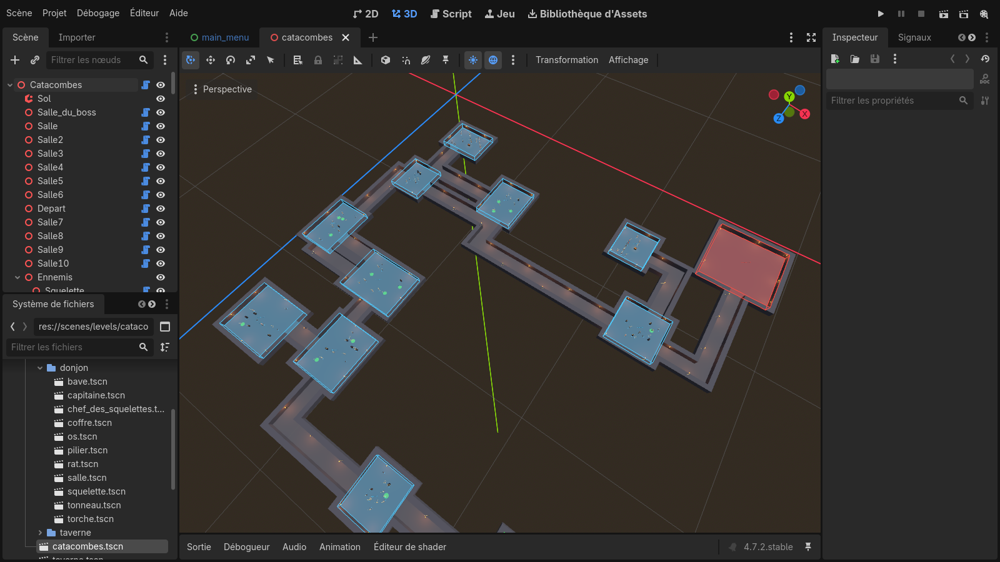
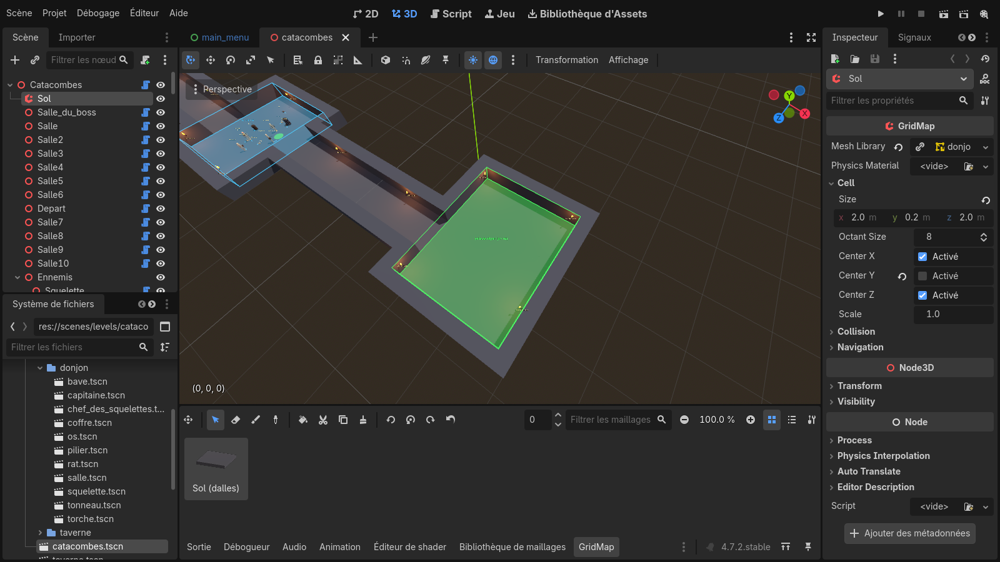
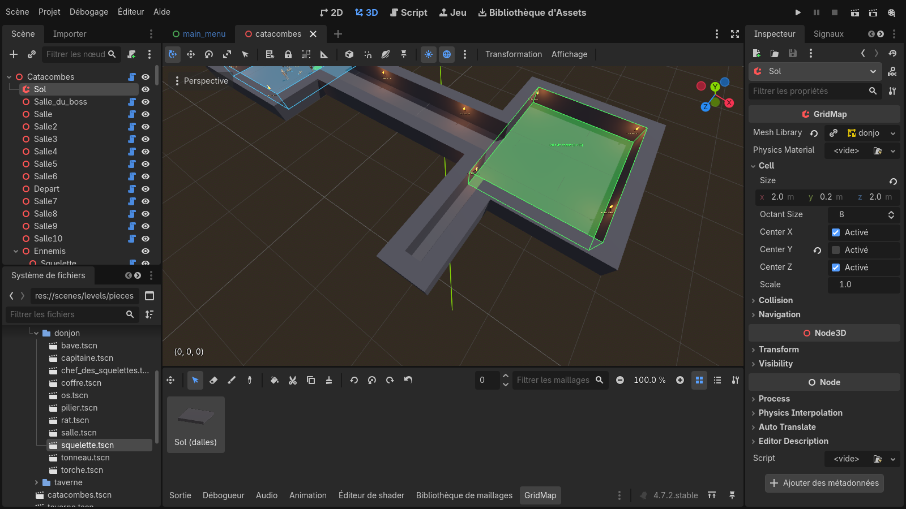
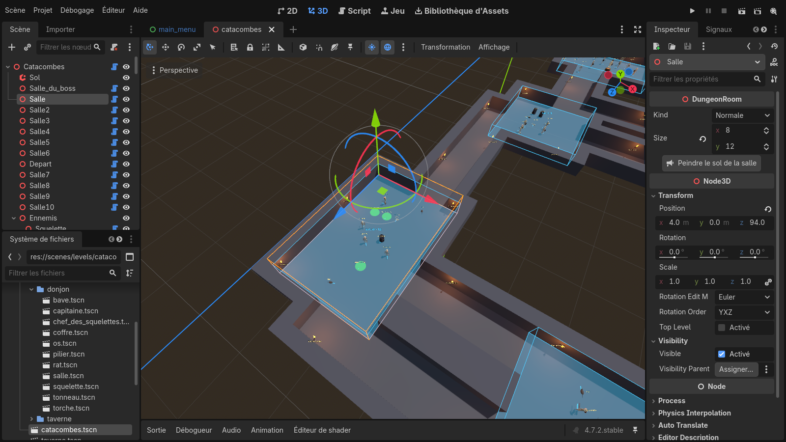
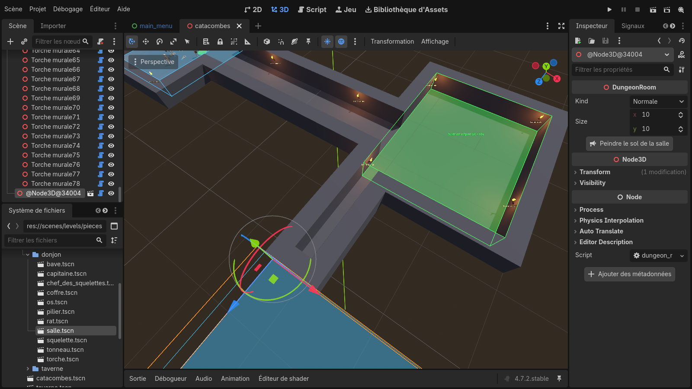
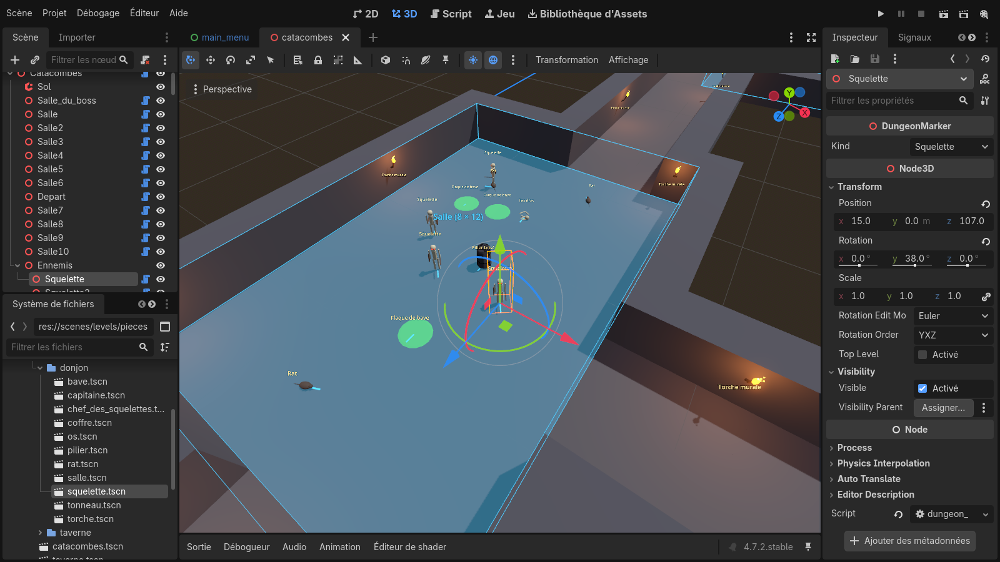
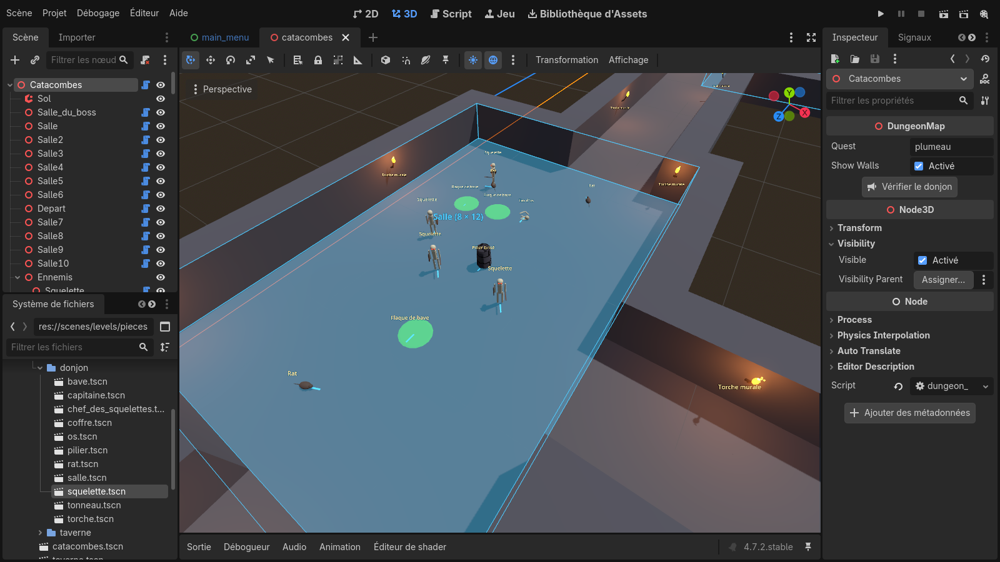

Créer son donjon
dans Godot
Guide pas à pas de l'éditeur de niveaux de Metal Bard
Ce que vous allez apprendre
- Ouvrir le donjon et se repérer dans l'éditeur
- Se déplacer dans la vue 3D
- Peindre le sol (les murs se posent tout seuls)
- Ajouter et régler des salles
- Placer les ennemis, les coffres et le décor
- Vérifier, tester en jeu et enregistrer
Le donjon travaillé ici est celui de la quête « Le Petit Plumeau » (les Catacombes Suintantes).
Toutes les captures viennent du vrai projet. Une vidéo commentée accompagne ce guide.
Pas d'inquiétude : tant que vous n'avez pas enregistré (Ctrl + S),
rien n'est modifié. Et Ctrl + Z annule la dernière action.
1Ouvrir le donjon
- Lancez Godot et ouvrez le projet Metal Bard (le dossier
metal-bard).
- En bas à gauche, dans le panneau Système de fichiers, ouvrez les dossiers
scenes → levels.
- Double-cliquez sur catacombes.tscn. Le donjon s'affiche au centre.
- Si la vue au centre n'est pas en 3D, cliquez sur 3D tout en haut de la fenêtre.

① Arbre de la scène
② Système de fichiers
③ Vue 3D
④ Inspecteur
| Zone | À quoi elle sert |
|---|
| ① Arbre de la scène | La liste de tout ce qui compose le donjon : le Sol, les salles
(Salle, Depart, Salle_du_boss…) et les dossiers d'objets (Ennemis, Decor, Torches). Cliquer sur un nom le sélectionne. |
| ② Système de fichiers | Les fichiers du projet. Les pièces à glisser dans le donjon sont dans
scenes/levels/pieces/donjon/. |
| ③ Vue 3D | Le donjon vu d'en haut : sol gris, salles en boîtes de couleur, objets avec leur nom. |
| ④ Inspecteur | Les réglages de ce qui est sélectionné (taille d'une salle, type d'un objet…) et les boutons spéciaux. |
Sur cette vue d'ensemble : les boîtes bleues sont les salles normales, la rouge est la salle du boss
(Gloubah). Les couloirs gris relient les salles.
2Se déplacer dans la vue 3D
La souris doit être au-dessus de la vue 3D (③).
| Geste | Effet |
|---|
| Molette de la souris | Zoomer / dézoomer |
| Clic molette maintenu + bouger la souris | Tourner autour du point regardé |
| Maj + clic molette maintenu | Faire glisser la vue (se décaler) |
| Clic droit maintenu + Z Q S D |
Voler dans la scène comme dans un jeu (la souris oriente le regard) |
| Sélectionner un objet puis F | Centrer la vue sur cet objet |
| Pavé numérique 7 | Vue de dessus (très pratique pour peindre le sol) |
Astuce : pour retrouver une salle, cliquez sur son nom dans l'arbre ①, puis placez la souris sur la vue 3D et appuyez sur F.
Les outils en haut de la vue 3D
Quand un objet est sélectionné, des flèches de couleur apparaissent dessus (on les voit page suivante) :
- Flèches rouge / verte / bleue : tirer sur une flèche déplace l'objet dans cette direction.
- Cercles : tirer sur un cercle fait tourner l'objet (utile pour orienter un ennemi ou une torche).
- Cliquer sur l'objet et le faire glisser le déplace librement sur le sol.
Attention à ne pas tirer la flèche verte (vers le haut) : les objets doivent rester posés au sol.
3Peindre le sol
Le sol se « peint » case par case (une case = 2 m). Les murs apparaissent tout seuls autour du sol : il ne faut jamais les dessiner.
- Dans l'arbre ①, cliquez sur Sol.
- Une palette s'ouvre sous la vue 3D : cliquez sur la tuile Sol (dalles).
- Cliquez (ou cliquez-glissez) dans la vue 3D pour poser du sol.
- Pour effacer : clic droit sur une case (ou outil gomme de la palette).

1. Cliquer sur Sol
2. Tuile « Sol (dalles) »
gomme
Exemple : un couloir peint à partir de la salle de départ (verte). Les murs se sont ajoutés tout seuls de chaque côté.

Après 6 cases peintes
Astuces : passez en vue de dessus (pavé numérique 7) pour peindre plus facilement.
Un couloir de 1 ou 2 cases de large convient bien. Pour masquer l'aperçu des murs, sélectionnez la racine
Catacombes et décochez Show Walls dans l'inspecteur.
4Les salles
Une salle est une boîte de couleur posée sur le sol : bleue = salle normale, verte = salle de départ
(le héros y apparaît), rouge = salle du boss.
Régler une salle
- Cliquez sur la salle dans l'arbre (ex. Salle).
- Dans l'inspecteur : Kind = type (Normale, Départ, Boss) ; Size = largeur (x) et profondeur (y) en cases.
- Cliquez sur Peindre le sol de la salle : tout l'intérieur de la boîte se remplit de sol.

Type et taille
Remplir de sol
Flèches : déplacer la salle
Ajouter une nouvelle salle
- Dans le Système de fichiers ②, ouvrez
scenes/levels/pieces/donjon/.
- Glissez
salle.tscn sur le nom « Catacombes » tout en haut de l'arbre ① (une salle doit être directement sous Catacombes).
- Déplacez-la avec les flèches à l'endroit voulu, réglez sa taille, puis Peindre le sol de la salle.
- Peignez un couloir (étape 3) pour la relier au reste du donjon.
Une porte se pose automatiquement à chaque arrivée de couloir dans une salle
(au hasard : porte de cachot, porte de crypte ou simple arche ; double porte pour le boss).
Un passage de plus de 5 cases de large reste ouvert, sans porte.
La salle ajoutée, juste après l'avoir glissée

nouvelle salle (renommable : double-clic)
salle.tscn
à régler ici
Règles à respecter
- Une seule salle de départ (verte) et une seule salle du boss (rouge).
- La salle du boss doit faire au moins 11 × 11 cases (Gloubah, son pentagramme et les cages de Plumeau y sont placés).
- Les salles ne doivent pas se chevaucher.
- Pour renommer une salle : double-clic sur son nom dans l'arbre.
- Pour supprimer : clic sur son nom puis Suppr.
En jeu, une salle reste dans le noir et ses monstres endormis tant que le joueur n'a pas ouvert sa porte.
5Placer ennemis, coffres et décor
Les pièces sont dans scenes/levels/pieces/donjon/. Glissez-les directement dans la vue 3D, sur le sol.

les pièces à glisser
Kind : type de l'objet
objet sélectionné
| Pièce | Dans le jeu |
|---|
squelette, capitaine | Squelettes ennemis (endormis tant que leur salle est fermée) |
chef_des_squelettes | Un seul ! Il porte la clé de la salle du boss |
rat | Rat des catacombes |
coffre | Coffre (or, potion, parfois un objet) |
torche | Torche murale : collez-la contre un mur, la flèche bleue vers la pièce |
os, bave, pilier, tonneau | Décor (piliers et tonneaux bloquent le passage) |
- Changer le type d'un objet déjà posé : inspecteur, champ Kind.
- Dupliquer : sélectionner puis Ctrl + D, et déplacer la copie.
- Tourner : tirer sur le cercle vert (l'ennemi ou le coffre regarde dans cette direction).
- Rangez les objets en les glissant dans les dossiers Ennemis, Decor, Torches de l'arbre (facultatif, mais plus clair).
6Vérifier, tester, enregistrer
Vérifier le donjon
- Cliquez sur Catacombes, tout en haut de l'arbre.
- Dans l'inspecteur, cliquez sur Vérifier le donjon.
- Ouvrez l'onglet Sortie, en bas de la vue 3D : la liste des problèmes s'affiche
(pas de salle de départ, chef manquant, salle du boss trop petite, objet posé hors du sol…). « Aucun problème » : tout va bien.

1
2. Vérifier le donjon
3. Sortie
Tester en jeu
Appuyez sur F6 (ou le bouton ▶ avec un clap, en haut à droite : Lancer la scène actuelle).
Une partie démarre directement dans votre donjon. Fermez la fenêtre du jeu pour revenir à l'éditeur.
Enregistrer
Ctrl + S. Le jeu utilisera votre donjon pour la quête « Le Petit Plumeau ».
Une sauvegarde faite en plein donjon garde la liste des ennemis tués et des portes ouvertes.
Après avoir beaucoup modifié le donjon, commencez une nouvelle partie ou terminez d'abord le donjon.
Récapitulatif express
| Ouvrir | scenes/levels/catacombes.tscn (double-clic) |
| Sol | Sélectionner Sol → tuile → clic (clic droit : effacer) |
| Salle | Glisser salle.tscn sur Catacombes → Kind, Size → Peindre le sol de la salle |
| Objets | Glisser les pièces dans la vue 3D ; Kind pour changer le type |
| Vérifier / tester / enregistrer | Vérifier le donjon → F6 → Ctrl+S |